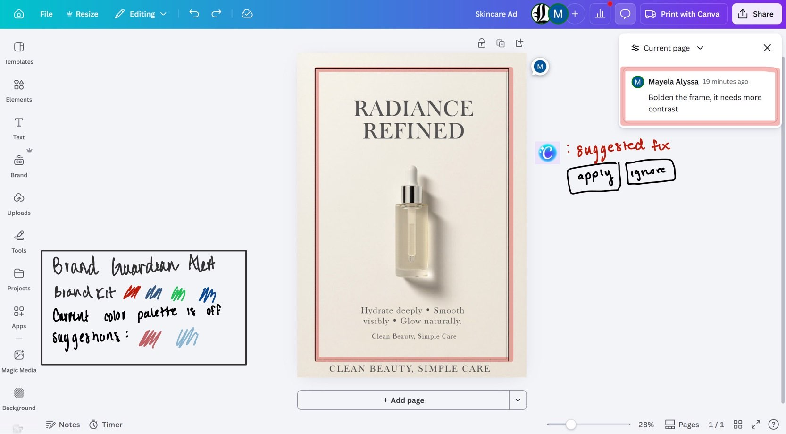
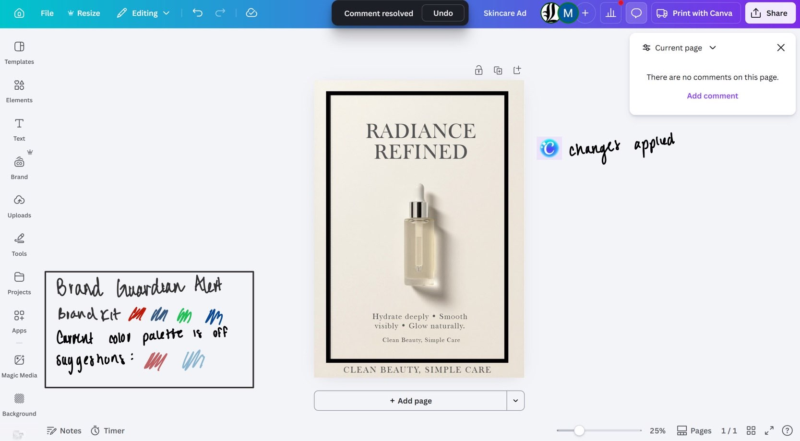
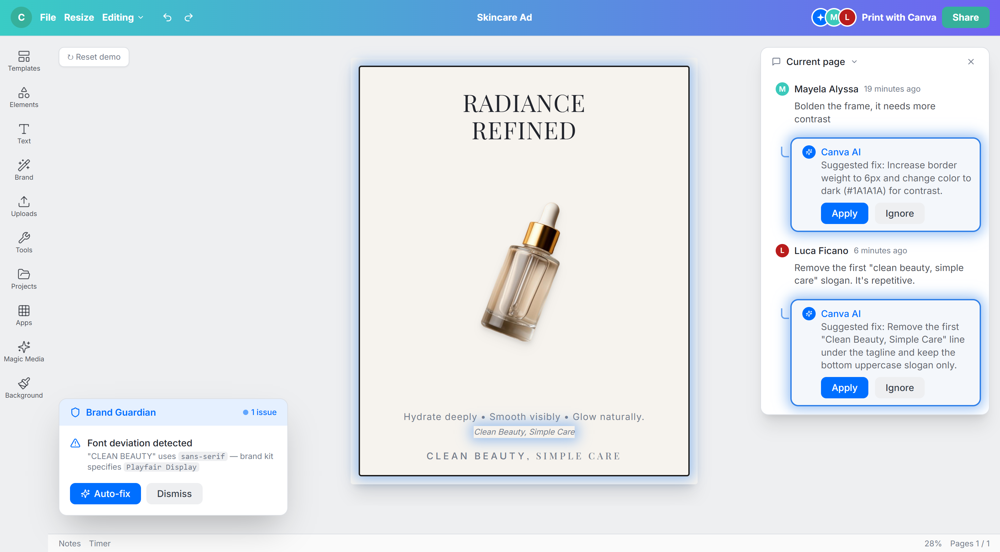
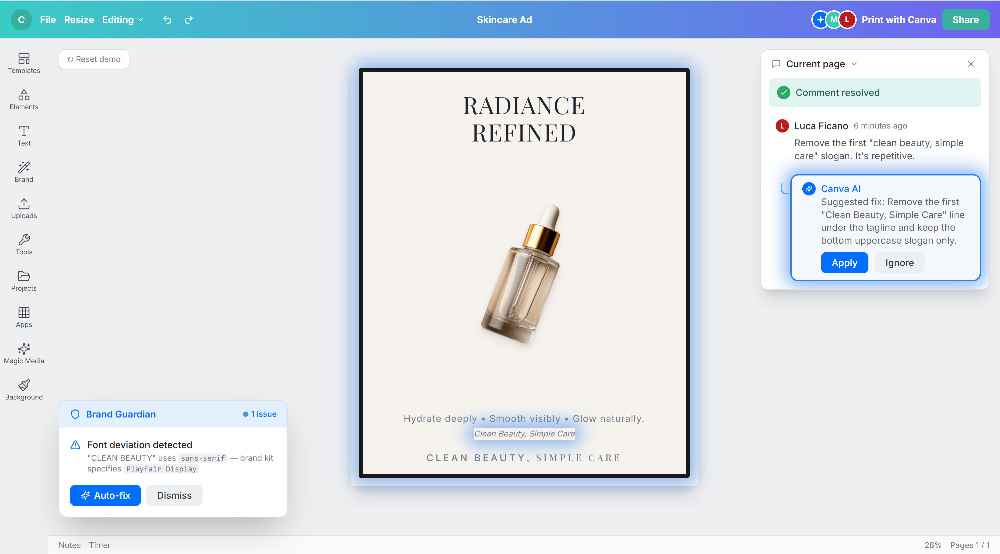
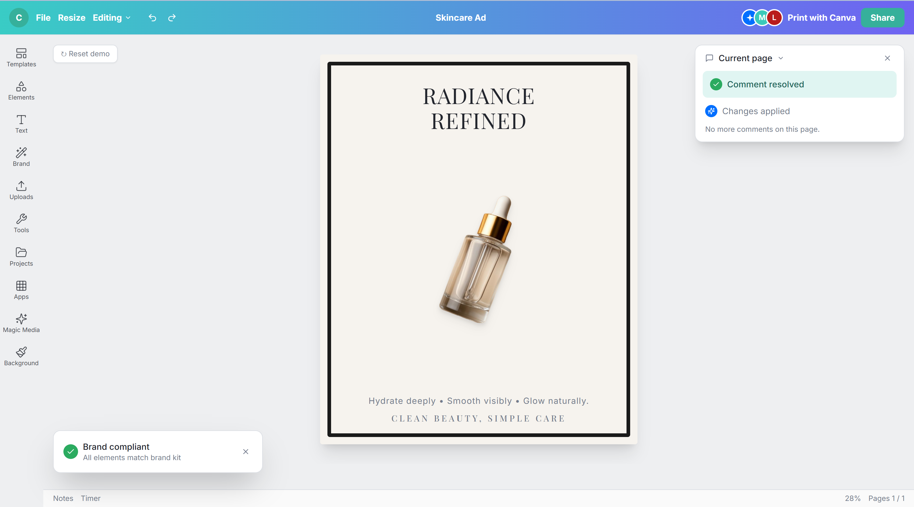

Problem Statement
85% of companies have brand guidelines but two thirds say they aren't enforced. Canva's Brand Kit is reference-only — teammates can ignore it, bypass suggestions, and publish off-brand with zero friction. Hard enforcement is paywalled behind Enterprise. Teams customers have no safety net.
Solution
Brand Guardian is a bilayer AI system built directly into the Canva editor. The proactive layer watches as you design and catches violations before review. The reactive layer translates natural language reviewer comments into exact inline fixes with one-click apply. Together they close the loop between brand guidelines and brand reality.
Core Features
- AI auto-populates brand kit from uploaded PDF, no manual entry
- Color intelligence that evaluates unknown colors using color theory, not just hex matching
- Tonal drift detection, catches designs that are spec-compliant but still feel off-brand
- Natural language comment resolution mapped to specific design properties
- Learns from every accept/override, building a living model of your brand over time
AI Workflow
Built using an AI-native development process — problem framing with Claude, prototype scaffolded with Lovable, deployed to Vercel. Claude served as a copilot throughout component wiring, interaction design, and iteration based on feedback.
Initial Prototype Sketches


Success Metrics
| Metric | What it Measures | Why it Matters |
|---|---|---|
| Brand Kit Compliance Rate | % of published designs with zero violations | North Star: did the problem get solved |
| Autofix Acceptance Rate | % of AI suggestions accepted vs dismissed | Is the AI accurate enough to be trusted |
| Revision Cycle Time | Time from comment posted to resolved | Is layer 2 actually reducing back and forth |
| Time-To-Publish | Design start to publish, Guardian on vs off | Productivity proxy, quantifies the ROI |
| Brand Guardian Setup Rate | % of workspaces with kit fully configured | Is onboarding working, is the feature even active |
Ship Plan
Phase 1 · Weeks 0–3
Core Guardian
- Color + font violation detection, inline flag UI, autofix suggestions
- Internal alpha with Canva's own marketing team
- Teams: ML/AI Eng, Design, Brand Kit Infra, PM
Phase 2 · Weeks 3–8
Comment Resolution + Coverage Expansion
- Ship AI Comment Resolution — the reactive layer
- Expand Guardian: logo usage, spacing, tonal drift, confidence thresholds
- Closed beta with 10–15 Teams/Enterprise customers
- Teams: Eng, Design, Data, Customer Success
Phase 3 · Weeks 8–14
GA + Learning Loop
- Full rollout with per-org AI personalization
- Brand manager compliance dashboard
- Teams: All + Legal (audit trail, AI transparency)
Final Product


